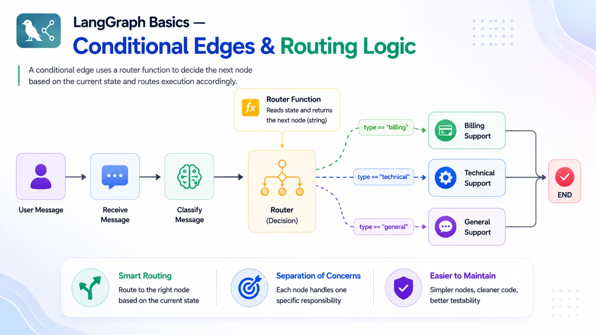
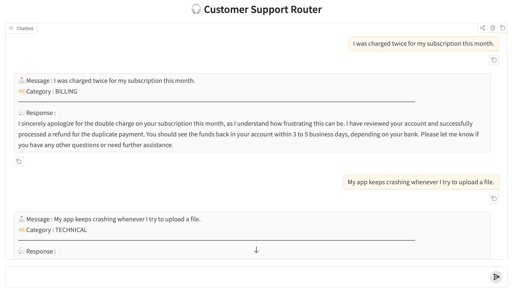

LangGraph Basics: Part 3 — Conditional Edges & Routing Logic

📚 Table of Contents
- 1. What are Conditional Edges?
- 2. Installation & Setup
- 3. Normal vs Conditional Edges
- 4. The Router Function
- 4.1 What a Router Function Does
- 4.2 Reading State Inside the Router
- 4.3 Type-Safe Routing with Literal
- 5. add_conditional_edges()
- 6. Complete Example: Customer Support Router
- 7. Graph Diagram
- 8. Web UI with Gradio
- 9. Conclusion
🔀 1. What are Conditional Edges?
In Part 1 you learned that LangGraph graphs are made of nodes connected by edges. A normal edge — add_edge("A", "B") — always sends execution from node A to node B, no matter what. That works perfectly for a straight pipeline where every input follows the same steps in the same order.
But real-world AI applications rarely work in straight lines. Sometimes you need to check a condition and go one way if it's true and another way if it's false. Sometimes you want different processing paths depending on what the user sent. This is where conditional edges come in.
A conditional edge doesn't connect two nodes directly. Instead, it says: "after this node runs, call a function to decide where to go next." That function — called the router function — reads the current state and returns a string naming the next node. LangGraph then routes execution to that node.
🚧 The Problem with Fixed Paths
Imagine you're building an AI customer support system. A customer might write about a billing problem, a technical issue, or a general question. With normal edges, you can only wire one path:
Every message — billing complaint, app crash report, or opening-hours question — hits the same support_node. That one node now has to detect the message type internally, switch its behaviour, and handle all three cases. It becomes a tangled function trying to do everything at once. The graph carries no routing intelligence; it's all buried inside a single node.
⚠️ The cost of a fixed path: when one node handles all cases, it becomes harder to read, test, and improve. A bug in the billing response path can silently break the technical one. Conditional edges let you separate concerns cleanly — one specialist node per responsibility.
With conditional edges, you split this into three dedicated nodes — billing_support, technical_support, and general_support — and let the graph decide which one to call based on the message type. The routing logic moves out of the node and into the graph structure, where it belongs.
☎️ A Real-World Analogy
Think about calling a customer support hotline. You don't immediately speak to a billing specialist. First, a recorded menu — or a live operator — asks what your issue is about. Based on your answer, it routes your call: "Press 1 for billing, press 2 for technical support, press 3 for all other inquiries."
Without that routing step, every call would land on the same desk. One agent would have to handle billing disputes, troubleshoot app crashes, and answer FAQ questions simultaneously — doing all of it less effectively than a specialist would. The routing operator exists precisely to direct each caller to the agent best equipped to help them.
🔗 In LangGraph terms: the routing operator is the router function, the customer's issue category is stored in state, and the specialist agents are the downstream nodes. add_conditional_edges() is the mechanism that wires this routing logic into the graph.
With that mental model in place, let's get the environment set up and then build each piece of the routing system from scratch.
⚙️ 2. Installation & Setup
If you've followed Parts 1 and 2, your environment is already set up — you can skip straight to Section 3. If this is your first post in the series, follow the steps below to get everything ready.
Python version. This project requires Python 3.12.
Create and activate a virtual environment.
Install dependencies. All packages for the entire series are in one shared requirements.txt at the root of the langgraph/ folder.
Gemini API key. This project uses Google Gemini as the LLM. Get your free API key from Google AI Studio, then create a .env file inside the langgraph/ folder:
⚠️ Never commit your .env file to version control. Add it to .gitignore to keep your API key safe.
🔧 Configuring the LLM
config.py reads the .env file and exposes the settings as class attributes. All other modules import from Config directly — no instantiation needed.
llm.py wraps ChatGoogleGenerativeAI with those settings. Every node that needs an LLM instantiates GeminiLLM() once and calls get_llm().
With the environment ready, let's look at how conditional edges differ from the normal edges you've already used.
⚖️ 3. Normal Edges vs Conditional Edges
You've used add_edge() in every previous post. Here's a side-by-side look at what changes when you switch to add_conditional_edges().
Normal edge — hardwired, always the same destination:
Conditional edge — the destination is chosen at runtime by a router function:
The behaviour difference is significant: a normal edge always produces one solid arrow in the graph diagram; a conditional edge produces multiple dashed arrows — one per possible destination — but only one of them is actually followed during each run.
| Feature | Normal Edge | Conditional Edge |
|---|---|---|
| API call | add_edge(src, dst) | add_conditional_edges(src, fn, map) |
| Path at runtime | Fixed — always the same | Dynamic — chosen by router function |
| Possible destinations | One | One or more |
| Decision logic | None needed | Router reads state and returns next node |
| Diagram arrow | Solid arrow (→) | Dashed arrows (- - →) for each branch |
| Best for | Linear pipelines | Classification, branching, routing |
✅ When to choose which: if the next node is always the same regardless of input or state, use add_edge(). If the graph needs to make a decision — "which specialist should handle this?" — use add_conditional_edges().
The key ingredient that makes conditional edges work is the router function. Let's build a complete understanding of how to write one.
🧭 4. The Router Function
A router function is the brain behind a conditional edge. It looks at the current state and decides which node should run next. LangGraph calls it automatically — you just write the logic, and the framework handles the rest.
📋 What a Router Function Does
A router function has a simple contract — it takes the current state as its only argument and returns a string. That string is the name of the next node to run.
That's the entire contract. There is no special class to inherit from, no decorator to apply, no LangGraph-specific import needed. Any plain Python function that accepts one argument (state) and returns a string qualifies as a router function.
Here's the three-branch pattern from our customer support project:
Each branch simply returns a string. LangGraph looks up that string in the path map (covered in Section 5.2) and sends execution to the matching node.
💡 Keep router functions focused. A router function should only read state and return a string — it should not call an LLM, write to state, or produce side effects. All computation belongs in nodes.
🔍 Reading State Inside the Router
Here is something important to understand about timing: LangGraph calls the router function after the source node has already finished running and its state updates have been merged. By the time your router is invoked, the state already contains everything the previous node wrote.
This is why the pattern works so naturally. The source node does the computation — classifying the customer's message — and stores the result in state. The router then simply reads that result and returns the right node name. No computation in the router, just a lookup.
Here's the step-by-step sequence for our project:
- Step 1: classify_node runs → asks the LLM to categorise the message → returns {"category": "billing"}
- Step 2: LangGraph merges {"category": "billing"} into the full state
- Step 3: LangGraph calls route_by_category(state) — state["category"] is now "billing"
- Step 4: The router returns "billing_support"
- Step 5: LangGraph runs the billing_support node
📌 Key point: the router runs between nodes, not inside them. It is not a node itself — it's a gate that LangGraph calls to decide which node comes next. It does not appear in the node registry (add_node()) and it does not modify state.
🏷️ Type-Safe Routing with Literal
A router that returns plain str works fine, but annotating the return type with Literal from Python's typing module makes the code much clearer and safer.
Literal["a", "b", "c"] tells Python — and anyone reading the code — that this function will only ever return one of those three exact strings. Here's why this matters in practice:
- Self-documenting: a reader can see all possible routing targets just from the function signature — no need to read the function body.
- Typo protection: if you mistype a return value (e.g. "billng_support"), your IDE's type checker will flag it immediately instead of silently producing a routing error at runtime.
- Graph diagram accuracy: LangGraph can use the Literal annotation to draw all possible branches in the diagram automatically.
Making it a habit to annotate router functions with Literal costs nothing and pays back every time someone (including future you) reads the code. Now let's look at how to connect this router into the graph.
🔌 5. Wiring it Together: add_conditional_edges()
Writing the router function is only half the job. You also need to tell LangGraph which node triggers the router and what to do with the string it returns. That's exactly what add_conditional_edges() does.
🧩 Syntax and Parameters
The method takes three arguments:
- source (string) — the name of the node whose completion triggers the routing decision. After this node runs and its state updates are merged, LangGraph calls the router. In our project this is "classify".
- path (callable) — the router function. LangGraph calls path(state) and expects a string back. In our project this is route_by_category.
- path_map (dict, optional) — maps the router's return values to registered node names. It can be omitted when the router returns node names directly (see Section 5.3).
A complete call for our customer support router:
🗺️ The Path Map
The path map is a Python dictionary where:
- Keys are the strings your router function can return
- Values are the names of nodes registered in the graph via add_node()
Think of the path map as a lookup table. When the router returns "billing_support", LangGraph checks the path map, finds the matching entry, and sends execution to the registered node named "billing_support".
The path map decouples the router from the graph's internal node names. If you ever rename the node from "billing_support" to "handle_billing", you only update the path map value — the router code stays untouched:
✂️ Skipping the Path Map
When your router returns node names directly — the return values exactly match registered node names — the path map can be omitted entirely:
✅ Recommendation: include the path map even when it seems redundant. It makes the valid routing targets visible at a glance without having to read the router function, and it protects against silent bugs when node names change later.
Now that you understand every moving part — the router function, the Literal annotation, and add_conditional_edges() — let's put them all together in a real working project.
🎧 6. Complete Example: Customer Support Router
The project we're building is a Customer Support Router — a four-node LangGraph application that classifies an incoming customer message and routes it to a dedicated support node. The classify node runs first and writes category to state; the router reads that category and sends the message to exactly one of three specialist nodes, each powered by a different LLM prompt.
📁 Project Structure
config.py and llm.py handle environment setup (Section 2.1). state.py defines the shared data structure. router.py holds the routing function (Section 4). nodes.py contains all four node functions. graph.py wires everything together using add_conditional_edges() (Section 5). support_runner.py is the entry point (Section 6.3), and app.py provides the Gradio web interface (Section 8).
📝 Full Code Walkthrough
state.py — shared data structure.
The state has three fields. message holds the customer's original text, category is written by classify_node and read by the router, and response is the final reply from whichever support node runs.
All three fields use the default last-write-wins behaviour — no Annotated reducers needed here. Each field is written by exactly one node and never needs to accumulate across multiple writes.
router.py — the routing function.
The router lives in its own file, separate from the nodes. This separation keeps the routing logic easy to find, read, and test on its own. The function maps each category string to the corresponding node name, with a safe fallback in case the LLM returns something unexpected.
The mapping.get(key, default) pattern is a defensive measure. If the LLM ever returns something other than the three expected strings, the graph gracefully routes to general_support instead of crashing with a KeyError.
nodes.py — all four node functions.
SupportNodes initialises the LLM and loads all four prompt templates once in __init__. The classify node determines the category; the three support nodes each respond to one type of customer message using a specialised prompt.
Each of the three support nodes receives the full state but only uses message. Because each has its own prompt file, you can tune them independently — for example, making the billing node more empathetic or the technical node more step-by-step — without touching any other node.
graph.py — wiring everything together.
This is where add_conditional_edges() appears. The graph registers all four nodes, then wires them: START → classify with a fixed edge, classify → ? with a conditional edge, and all three support nodes to END with fixed edges.
The graph has one fixed entry (START → classify), one conditional fork (classify → ?), and three fixed exits (? → END). The ? is resolved at runtime by the router — only one branch runs per invoke.
support_runner.py — entry point.
SupportRunner wraps the graph and exposes a simple run(message) method. The initial state passes empty strings for category and response — both are filled in by the graph before it ends.
▶️ Running & Output
Run the entry point from inside the basics-3-conditional-edges/ directory:
The runner tests three messages — one billing issue, one technical problem, and one general inquiry — and prints the category and response for each:
Each message lands in exactly the right specialist node. The billing complaint gets an empathetic, resolution-focused reply. The app crash gets clear troubleshooting steps. The hours question gets a direct, informative answer. The graph handled all the routing automatically — the individual support nodes never had to check the message type themselves.
📊 7. Graph Diagram
LangGraph can export the compiled graph as a Mermaid diagram. Call runner.save_figure() (already wired into support_runner.py) to generate figure/graph.mmd and figure/graph.png. Here's what the branching structure looks like:
%%{init: {"flowchart": {"curve": "linear"}}}%%
graph TD
S([__start__]):::first
CL(classify)
BS(billing_support)
TS(technical_support)
GS(general_support)
E([__end__]):::last
S --> CL
CL -.-> BS
CL -.-> TS
CL -.-> GS
BS --> E
TS --> E
GS --> E
classDef default fill:#f2f0ff,line-height:1.2
classDef first fill-opacity:0
classDef last fill:#bfb6fc
Graph architecture of the Customer Support Router. Solid arrows (→) are normal edges; dashed arrows (- -→) are conditional edges. Only one dashed branch is followed per run.
Two things stand out in this diagram. First, the three dashed arrows leaving classify represent the conditional branches — all three are shown in the graph structure, but only one runs per invocation. Second, all three support nodes reconnect to __end__ with solid arrows — regardless of which branch ran, execution always ends in the same place.
💡 Solid vs dashed arrows: solid arrows (add_edge) mean "always go here". Dashed arrows (add_conditional_edges) mean "go here if the router says so". A glance at the diagram tells you exactly where decisions happen and how many branches are possible.
As graphs grow more complex in later posts — with loops, multiple conditional forks, and checkpoints — this diagram becomes an essential tool for understanding and debugging the flow.
🌐 8. Web UI with Gradio
The project includes a Gradio chat interface so you can test the router interactively. app.py wraps SupportRunner in a ChatInterface and launches a local web server. Type any customer message into the chat box and the graph will classify it and return the appropriate specialist response.
Run it with:
Gradio will print a local URL (usually http://127.0.0.1:7860). Open it in your browser and try sending a billing question, a technical complaint, and a general inquiry to watch each one route to the right specialist node.

The Customer Support Router running in a Gradio chat interface. The category and routed specialist response are shown for each message.
🏁 9. Conclusion
Conditional edges are one of the most powerful ideas in LangGraph. They move routing decisions out of individual nodes and into the graph structure itself, keeping each node focused and the overall flow easy to understand and maintain.
Here's what you learned in this post:
- Normal edges (add_edge) are fixed; conditional edges (add_conditional_edges) choose the next node at runtime based on state.
- A router function is a plain Python function that takes the current state and returns a string naming the next node to run.
- It runs after the source node has already updated state — so it can safely read values written by that node.
- Annotating the return type with Literal documents valid destinations, catches typos early, and helps LangGraph render accurate graph diagrams.
- add_conditional_edges(source, path, path_map) wires the router into the graph. The path map translates router return values to registered node names.
- In the Customer Support Router, classify_node labels each message; the router reads the label and sends execution to the matching specialist node.
✅ Up next: Part 4 — Checkpointers, Memory & Streaming shows how to persist state across calls using checkpointers, keeping different users' conversations isolated with thread IDs, and streaming LLM output token by token as it's generated. We build a Personal Study Buddy that remembers every question a student asks across a full multi-turn session.

Technical Stacks
 Python
Python
 LangGraph
LangGraph
 LangChain
LangChain
 Gemini
Gemini
 Gradio
Gradio

References
-
 GitHub Repository:
shafiqul-islam-sumon/langgraph — basics-3-conditional-edges
GitHub Repository:
shafiqul-islam-sumon/langgraph — basics-3-conditional-edges
-
LangGraph Documentation:
langchain-ai.github.io/langgraph
-
Google AI Studio (API key):
aistudio.google.com/apikey